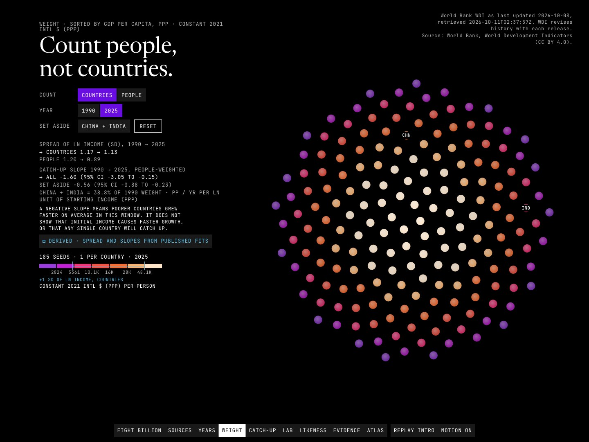

Data story · Python pipeline · Interactive comparison engine · 2026-10
The World, Explained Through Economic Forces
Are poorer countries catching up? A scroll story and comparison engine over World Bank data for 217 countries, drawn as a seed head of one-million-person grains, with every number tagged and every limit stated.

Source: World Bank, World Development Indicators (CC BY 4.0), vintage 2026-10-08, and Bolt and van Zanden, Maddison Project Database 2023 (CC BY 4.0) via Our World in Data, used for long-run context only. IMF data is not used. Convergence, correlations and clusters are descriptive, not causal. Not sponsored or endorsed by the World Bank, Our World in Data or the Maddison Project.
01 — The problem
Countries differ enormously in income, growth and economic structure. Two questions sit under most of the discussion: are poorer countries catching up, and which countries look alike once several indicators are put on one footing?
The answer depends on choices that are usually hidden: which price basis, which window, whether countries or people are counted. This project makes those choices visible and lets a visitor change them, with no backend.
02 — What I built
An offline pipeline and a static site joined by a contract.
- Pipeline: World Bank WDI for 217 countries (79 aggregates excluded) with a ledger of every dropped row, no interpolation, and 16 JSON artifacts with a JSON Schema each.
- Analytics: absolute convergence regressions with robust and bootstrap intervals, unit guards that stop PPP, constant-dollar and Maddison series from ever being mixed, descriptive correlations and a k = 3 clustering, and template narratives built only from computed values.
- Site: the Seed Head, a lattice of grains each standing for about one million people, grouped into country territories whose layouts are solved offline and shipped as data. The visitor scrolls through years, switches from counting countries to counting people, tests the catch-up claim under different windows, and compares any economies in the atlas.
Every figure carries an honesty tag: OBSERVED, DERIVED or PREDICTED.
03 — How it was built
- 01
Account for every row
The World Bank entity list is split into 217 countries and 79 aggregates; aggregate rows are dropped and counted, missing values stay missing, and nothing is interpolated. Invariants are asserted per indicator.
- 02
Keep price bases apart
PPP (2021 international dollars), constant 2015 dollars, current dollars and Maddison's 2011 dollars are different quantities. One guard is called by every ranking, regression and cluster, and a test proves it raises on a mixed comparison.
- 03
Test catch-up honestly
Since 1990 the PPP slope is -0.37 percentage points per year per log unit (95% CI -0.59 to -0.15): weak absolute convergence. The 1960 constant-dollar window has n = 102 and a CI that spans zero. The population-weighted slope of -1.60 falls to -0.56 without China and India, which hold 38.8% of the 1990 weight.
- 04
Solve the layout offline
Country territories are fitted to a Vogel lattice with a rank-order bound (rank-radius Spearman 0.87 to 0.99), so richer countries sit nearer the core. The solve takes about 45 minutes and is shipped as data; 9 of 20,367 territory-layouts are under 95% connected, and connectivity is published per layout.
- 05
Say what is weak
The clusters separate weakly (silhouette 0.225) and are labelled a summary device. Boundary event years are unverified, the export concentration index understates product-level concentration, and the IMF is excluded for licence reasons.
04 — Results
Data. In 2025, income per person among 185 countries with data runs from 1,067 (Burundi) to 139,593 (Singapore) international dollars, a 131-fold range; the median person lives in Indonesia at 15,091 dollars, up from Pakistan at 3,200 in 1990. Across 53 countries observed in both years, the max/min ratio rose from 5.2 in 1820 to 56 in 2022 (Maddison dollars). Cross-country spread is nearly flat (SD of ln income 1.17 in 1990, 1.13 in 2025) while the population-weighted spread falls (1.20 to 0.89).
Build. Measured on the deployed site (Lighthouse 13, three runs each): mobile LCP 1.66 to 1.70 s on two runs and 2.51 s on a cold first run, a re-measure on an idle machine gave 1.66 s twice; performance 0.96 to 0.99, accessibility, best practices and SEO 1.00, CLS 0. Desktop: performance 1.00, LCP 0.37 to 0.50 s. Independent QA took three passes (two failed, the third passed with minors); 181 browser tests, 111 unit tests, 59 pipeline tests and 44 axe-core scans with no violations.
Known limits. Phone S03a: the readout panel covers 26% (390), 36% (375) and 48% (360) of the disc. Frame pacing was measured on software GL only. The site is a dated snapshot and there is no code licence yet.
05 — What I'd do next
- Estimate conditional convergence with controls.
- Publish constant-dollar sensitivity points for 1960 and 1980 so those lab options are enabled.
- Shrink the phone readout so more of the disc shows at 360 px; measure real-device frame pacing.